|
Confección de modelos |
¿Cómo confeccionar un modelo de horarios?
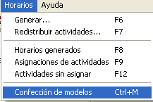
Seleccione la opción Confección de Modelos del menú Horarios o presione las teclas Ctrl+M.
Luego seleccione algunas de las opciones de la ventana que aparecerá.
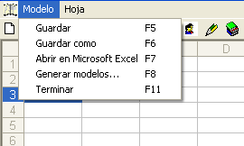
Guardar y Guardar como: Cuando se haya creado un modelo de horarios, puede guardarse donde usted desee en formato de archivo HTML. Este a su vez puede ser abierto con Internet Explorer o Microsoft Excel.
Abrir en Microsoft Excel: Lanza a Microsoft Excel con el archivo previamente guardado. Aquí podrá utilizar todas las potencialidades de esta aplicación.
Generar modelos: Muestra una ventana con las opciones necesarias para generar los modelos de horarios de brigadas, profesores o lugares.
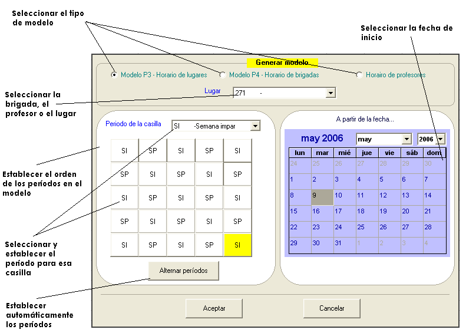
Los modelos que la presente versión elabora, son los estándares Modelos P4 y P3, utilizados en Universidades:
Modelo P3: Constituye el horario de un lugar. En él aparecen en cada turno, la identificación o el alias si posee, de una de las brigadas, según el grupo por clasificación de actividad, que realizará o realiza una actividad en dicho lugar.
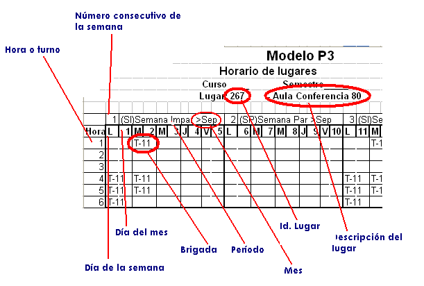
Modelo P4: Constituye un horario de profesor u horario de brigada:
Para el horario de profesor aparece en las casillas de turno la brigada y el lugar con el cual tiene actividad
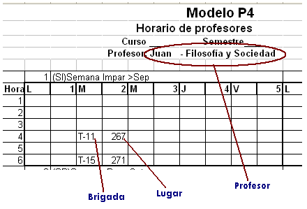
Para el horario de la brigada aparece la asignatura y el lugar donde va a realizar la actividad.
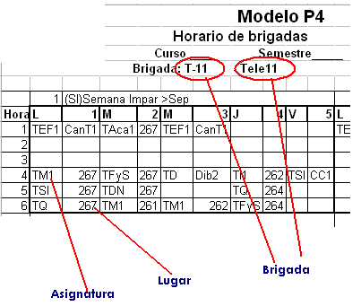
Los modelos se crean en una Hoja de Cálculo de Microsoft Excel, y el sistema posibilita tener varias hojas. No obstante cada vez que se vaya a generar el sistema preguntará:
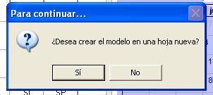
Si responde No, remplazará el modelo de la hoja que tiene actualmente seleccionada. Si responde Sí, agregará una nueva hoja.
Para seleccionar una hoja en específico haga click en la pestaña que aparece en el borde izquierdo inferior de la ventana:
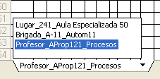
Para realizar otras acciones sobre el modelo que tenga seleccionado, haga click derecho sobre el y aparecerá un menú contextual con varias opciones. Para obtener más ayuda sobre las Hojas de cálculo seleccione la opción Ayuda de este menú.
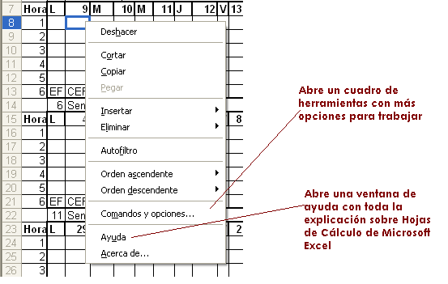
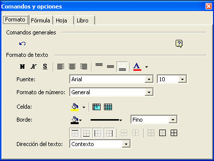
Si en el momento de seleccionar la Ayuda sobre Hojas de Cálculo no aparece, eche un vistazo a la barra de tareas.
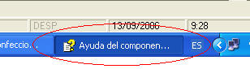
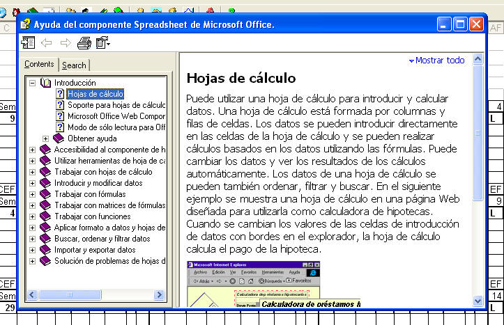
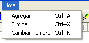
En el menú Hojas puede agregar, eliminar o cambiar el nombre de una hoja. Los nombres de hojas de cálculo no pueden poseer ciertos caracteres, el sistema le avisará cuando suceda.
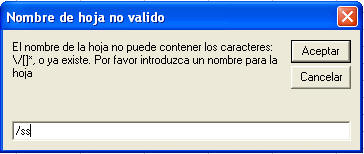